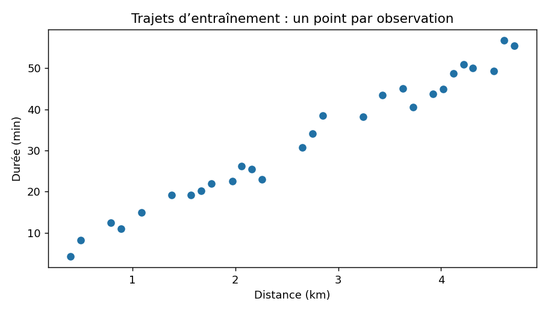

Ting Tan · EEEA · Oct 2026
Exécution de référence mesurée · données pédagogiques fictives
{
"rows": 48,
"input": "distance_km",
"target": "duration_min",
"split_counts": {
"train": 28,
"validation": 10,
"test": 10
},
"mean_distance_km": 2.7
}| id | distance_km | duration_min | split |
|---|---|---|---|
| W001 | 0.4 | 4.18 | train |
| W002 | 0.5 | 8.17 | train |
| W005 | 0.79 | 12.48 | train |
| W006 | 0.89 | 10.97 | train |
| W008 | 1.09 | 14.84 | train |
| W011 | 1.38 | 19.2 | train |

{'python': '3.8.20', 'numpy': '1.24.4', 'sklearn': '1.3.2', 'matplotlib': '3.7.4'}